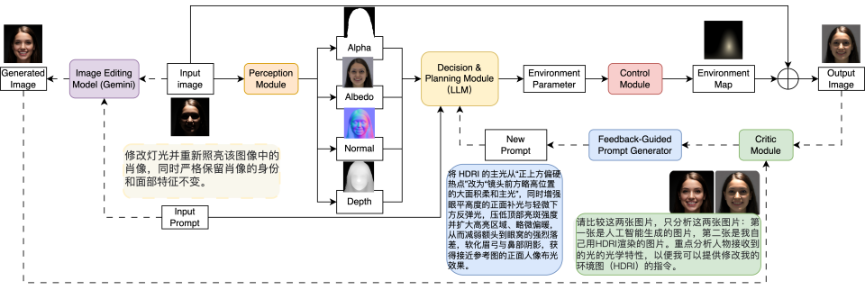

Multi-Agent Portrait Relighting
Relight Your Beauty: Multi-Agent Portrait Relight with Structured Visual Feedback
Interactive Comparisons
Drag the handle to compare the shadowed input with our relighting result.
Method
Framework
A structured multi-agent pipeline for perceiving, planning, controlling, and evaluating portrait illumination.

Results
Comparison
Qualitative comparisons across diverse identities, appearances, and lighting conditions.